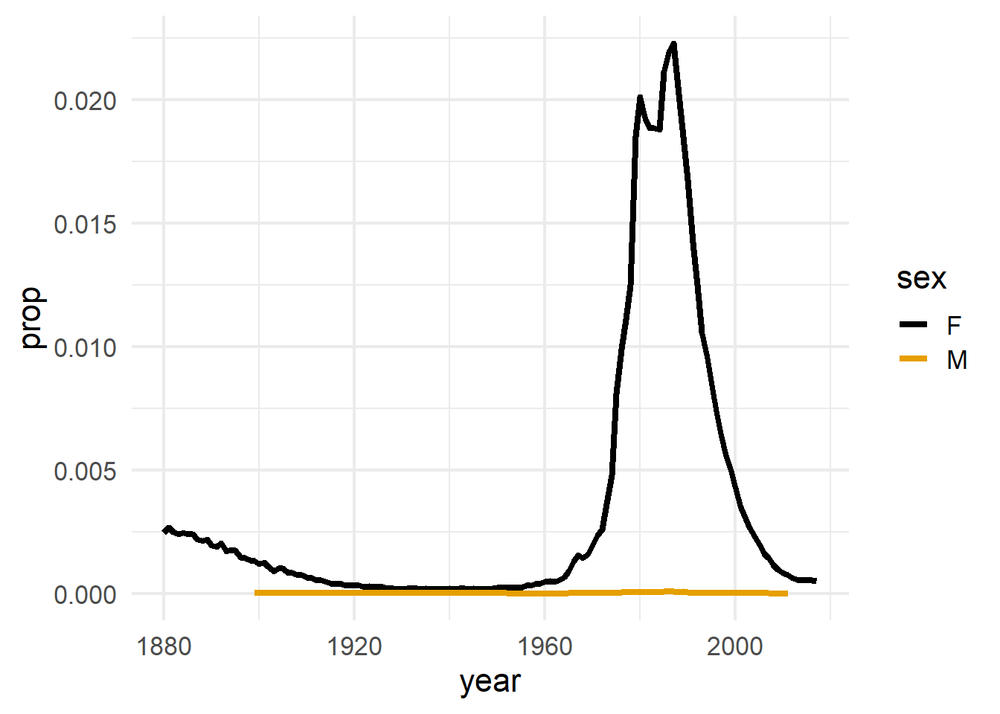

"Carleton College"
"2025"
'"Hello World"'Working with
Strings
Day 12
Today
- Lab Quiz 2 Info
- Local versions of R/RStudio/GitHub
- Intro to strings
string
any finite sequence of characters (i.e., letters, numerals, symbols and punctuation marks).
Strings in R
Anything surrounded by quotes(") or single quotes(').
str_view
str_view is a handy function that prints the underlying representation of a string and can also be used to check pattern matching (which we’ll see in a bit!)
str_view("Carleton College")[1] │ Carleton Collegestr_view("2025")[1] │ 2025str_view('"Hello World"')[1] │ "Hello World"The “escape” backslash is used to escape the special use of certain characters
str_view("Math\Stats")Error: '\S' is an unrecognized escape in character string (<input>:1:16). . .
str_view("\"")[1] │ "str_view("\\")[1] │ \str_view("Math\\Stats")[1] │ Math\Stats
Simple, consistent functions for working with strings.
Part of the
tidyverse
# loaded with tidyverse
library(stringr)String length
str_length() determines the length of a string.
cc <- "Carleton College"
str_length(cc)[1] 16Combine strings
str_c() allows us to easily create strings from variables/vectors.
building <- "CMC"
room <- "306"
begin_time <- "11:10 a.m."
end_time <- "12:20 p.m."
days <- "MW"
class <- "STAT 220"
str_c(class, "meets from", begin_time, "to", end_time,
days, "in", building, room, sep=" ")[1] "STAT 220 meets from 11:10 a.m. to 12:20 p.m. MW in CMC 306"Concatenate Strings
str_c() works with vectors
letters [1] "a" "b" "c" "d" "e" "f" "g" "h" "i" "j" "k" "l" "m" "n" "o" "p" "q" "r" "s"
[20] "t" "u" "v" "w" "x" "y" "z". . .
str_c(letters, 1:26) [1] "a1" "b2" "c3" "d4" "e5" "f6" "g7" "h8" "i9" "j10" "k11" "l12"
[13] "m13" "n14" "o15" "p16" "q17" "r18" "s19" "t20" "u21" "v22" "w23" "x24"
[25] "y25" "z26". . .
str_c(letters, 1:26, sep = "") [1] "a1" "b2" "c3" "d4" "e5" "f6" "g7" "h8" "i9" "j10" "k11" "l12"
[13] "m13" "n14" "o15" "p16" "q17" "r18" "s19" "t20" "u21" "v22" "w23" "x24"
[25] "y25" "z26". . .
str_c(letters, 1:26, sep = "-") [1] "a-1" "b-2" "c-3" "d-4" "e-5" "f-6" "g-7" "h-8" "i-9" "j-10"
[11] "k-11" "l-12" "m-13" "n-14" "o-15" "p-16" "q-17" "r-18" "s-19" "t-20"
[21] "u-21" "v-22" "w-23" "x-24" "y-25" "z-26"Case conversion
str_to_lower() and str_to_upper() can help “fix” the case
text <- "NoRthFieLd, mN"
str_to_lower(text)[1] "northfield, mn". . .
str_to_upper(text)[1] "NORTHFIELD, MN"Babynames
library(babynames)
babynames# A tibble: 1,924,665 × 5
year sex name n prop
<dbl> <chr> <chr> <int> <dbl>
1 1880 F Mary 7065 0.0724
2 1880 F Anna 2604 0.0267
3 1880 F Emma 2003 0.0205
4 1880 F Elizabeth 1939 0.0199
5 1880 F Minnie 1746 0.0179
6 1880 F Margaret 1578 0.0162
7 1880 F Ida 1472 0.0151
8 1880 F Alice 1414 0.0145
9 1880 F Bertha 1320 0.0135
10 1880 F Sarah 1288 0.0132
# ℹ 1,924,655 more rowsPopularity of “Amanda” over time

Replicate this plot with your own name. If your name doesn’t have enough data, try a friend or professor’s name
Babynames
babynames# A tibble: 1,924,665 × 5
year sex name n prop
<dbl> <chr> <chr> <int> <dbl>
1 1880 F Mary 7065 0.0724
2 1880 F Anna 2604 0.0267
3 1880 F Emma 2003 0.0205
4 1880 F Elizabeth 1939 0.0199
5 1880 F Minnie 1746 0.0179
6 1880 F Margaret 1578 0.0162
7 1880 F Ida 1472 0.0151
8 1880 F Alice 1414 0.0145
9 1880 F Bertha 1320 0.0135
10 1880 F Sarah 1288 0.0132
# ℹ 1,924,655 more rowsExample questions:
- How many names end in a vowel?
- How many names contain the pattern “stat”
- How many names contain 3 A’s?
Extract substrings
str_sub(string, start = 1, end = -1)string= character vectorstart/end= position of the first and last characters
Extract substrings
We can pull apart strings from the start…
cc <- "Carleton College"
str_sub(cc, 10) # end defaults to last character[1] "College". . .
str_sub(cc, 1, 8)[1] "Carleton". . .
# match the elements of each vector for positions
str_sub(cc, c(1, 10), c(8, 16))[1] "Carleton" "College" Extract substrings
… or the end
cc <- "Carleton College"
str_sub(cc, -3)[1] "ege". . .
str_sub(cc, -8, -3)[1] " Colle"Your turn:
What will the following commands return?
str_sub("Amanda Luby", 1, 4)
str_sub("Amanda Luby", 4)
str_sub("Amanda Luby", -5)Your turn (again):
Confer with folks around you. Fill in the blanks of the .Rmd file to…
Isolate the last letter of every name
Create a logical variable that displays whether the last letter is one of “a”, “e”, “i”, “o”, “u”, or “y”.
Use a weighted mean to calculate the proportion of children whose name ends in a vowel by year (see
?weighted.mean)and then display the results as a line plot.
Extract substrings
What about a vector of strings?
fruits <- c("apple", "pineapple", "Pear", "orange", "peach", "banana")
str_sub(fruits, 2, 4)[1] "ppl" "ine" "ear" "ran" "eac" "ana". . .
str_sub(fruits, 2, 2)[1] "p" "i" "e" "r" "e" "a". . .
str_sub(fruits, 4, 4)[1] "l" "e" "r" "n" "c" "a". . .
str_sub(fruits, c(2, 4, 2, 4, 2, 4), c(2, 4, 2, 4, 2, 4))[1] "p" "e" "e" "n" "e" "a"Pad strings
We can add character(s) to the beginning or end of a string
nums <- 1:10
as.character(nums) [1] "1" "2" "3" "4" "5" "6" "7" "8" "9" "10". . .
str_pad(nums, 2, pad ="0") [1] "01" "02" "03" "04" "05" "06" "07" "08" "09" "10". . .
str_pad(nums, 3, pad ="0") [1] "001" "002" "003" "004" "005" "006" "007" "008" "009" "010". . .
str_pad(nums, 3, pad ="0", side = "right") [1] "100" "200" "300" "400" "500" "600" "700" "800" "900" "100". . .
str_pad(nums, 3, pad ="0", side = "both") [1] "010" "020" "030" "040" "050" "060" "070" "080" "090" "100"Use the courses dataset in the .rmd file to answer the following:
How many of the course numbers end in
.00? Usestr_detect()orstr_count()to help you answer this question.The section number appears after the decimal point. Use
mutate()andstr_sub()to create asectioncolumn containing this number.How many courses contain the word
Introduction? Does case matter here?What is the longest course name (in terms of characters)? What is the shortest course name? Use
str_length()to help you answer this question.Which course name is comprised of the most words? To do this, create a new column containing the words in each title using
mutate()andstr_split(). Then, create another column calculating thelength()of the values in column you just created.Use
str_subset()to return the course names that contain exclamation points (!).
countdown::countdown(10)Regular Expressions
Regular expressions
Sometimes the patterns we wish to detect, extract, etc. too complex for exact matching
- Extract all time stamps of the form
HH:MM:SS - Extract the string that comes after the dash (e.g.
hw01-aluby)
- Extract all time stamps of the form
Regular expressions (regexps) are a very terse language that allow you to describe patterns in strings
Confusing at first, but extremely useful
Example
Suppose we wish to anonymize phone numbers in survey results
a1 <- "Home: 507-645-5489"
a2 <- "Cell: 219.917.9871"
a3 <- "My work phone is 507-202-2332"
a4 <- "I don't have a phone"
info <- c(a1, a2, a3, a4)[1] "Home: 507-645-5489" "Cell: 219.917.9871"
[3] "My work phone is 507-202-2332" "I don't have a phone" Visualizing matches
The helper function str_view() finds regex matches
str_view(a1, "5")[1] │ Home: <5>07-64<5>-<5>489. match any character
Find a “-” and any (.) character that follows
str_view(a1, "-.")[1] │ Home: 507<-6>45<-5>489[] match any occurence
Find any numbers between 0 and 9
str_view(a1, "[0123456789]")[1] │ Home: <5><0><7>-<6><4><5>-<5><4><8><9>[] match any occurence
Find any numbers between 2 and 7
str_view(a1, "[2-7]")[1] │ Home: <5>0<7>-<6><4><5>-<5><4>89Your turn:
Detect either “.” or “-” in the info vector.
a1 <- "Home: 507-645-5489"
a2 <- "Cell: 219.917.9871"
a3 <- "My work phone is 507-202-2332"
a4 <- "I don't have a phone"
info <- c(a1, a2, a3, a4)Special patterns
There are a number of special patterns that match more than one character
\\d- digit\\s- white space\\w- word\\t- tab\\n- newline
. . .
str_view(a1, "\\d")[1] │ Home: <5><0><7>-<6><4><5>-<5><4><8><9>Outside of R, these would be single back slashes.
Caution!
str_view(a1, "\\w")[1] │ <H><o><m><e>: <5><0><7>-<6><4><5>-<5><4><8><9>[^] match any occurence except
ANYTHING BUT numbers between 2 and 7
str_view(a1, "[^2-7]")[1] │ <H><o><m><e><:>< >5<0>7<->645<->54<8><9>Common pitfall: forgetting the brackets
Anchors
Anchors look for matches at the start ^ or end $
[1] │ Home: 507-645-5489
[2] │ Cell: 219.917.9871
[3] │ My work phone is 507-202-2332
[4] │ I don't have a phonestr_view(info, "^\\d")str_view(info, "\\d$")[1] │ Home: 507-645-548<9>
[2] │ Cell: 219.917.987<1>
[3] │ My work phone is 507-202-233<2>Use regex in str_detect, str_sub, etc:
str_view(info)[1] │ Home: 507-645-5489
[2] │ Cell: 219.917.9871
[3] │ My work phone is 507-202-2332
[4] │ I don't have a phonestr_detect(info, "\\d")[1] TRUE TRUE TRUE FALSEstr_replace_all(info, "\\d", "X")[1] "Home: XXX-XXX-XXXX" "Cell: XXX.XXX.XXXX"
[3] "My work phone is XXX-XXX-XXXX" "I don't have a phone" Your turn
Fill in the code to determine how many baby names in 2015 ended with a vowel.
Use a regular expression to specify the pattern.
babynames %>%
___(___ == ___) %>% # extract year 2015
___(ends_with_vowel = ___(___, ___)) %>% # create logical column
count(ends_with_vowel) # create a frequency table